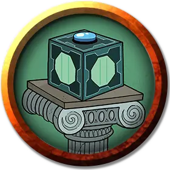

Мисикс
Meeseeks
Средний Гуманоид (Любая раса), любое мировоззрение

Класс Доспеха 10
Хиты иммунитет всему урону
Скорость 30 футов
| мод | спас | ||
|---|---|---|---|
| СИЛ | 10 | +0 | +0 |
| ЛОВ | 10 | +0 | +0 |
| ТЕЛ | 10 | +0 | +0 |
| мод | спас | ||
|---|---|---|---|
| ИНТ | 10 | +0 | +0 |
| МДР | 10 | +0 | +0 |
| ХАР | 10 | +0 | +0 |
Чувства пассивное Восприятие 10
Языки Общий
Опасность 0
Бонус мастерства +2
Особенности
Отыгрыш Мисикса. Слово мудрому Мастеру об этой комнате: получайте от этого удовольствие. Думайте о себе как о джинне, который воспринимает желания ваших игроков предельно буквально. Найдите способы заставить Мисиксов выполнить своё предназначение и исчезнуть как можно быстрее. Цель состоит не в том, чтобы заставить их восстать против партии. Если игрокам удастся поставить вас в тупик, дав Мисиксу цель, сформулированную так тщательно, что даже вы не сможете придумать способ её разрушить, попросите этого Мисикса призвать другого Мисикса на помощь. Вскоре выясняется, что это ужасная каскадная проблема.
Как правило, Мисиксы жизнерадостны и готовы помочь, если только их существование не длится дольше нескольких часов. Они не хотят сражаться и слишком глупы, чтобы решать головоломки. Однако они будут подбадривать вас, даже если будут давать бесполезные советы.
У Мисиксов есть несколько отличительных качеств, которые вы могли бы использовать для максимального погружения:
• Постоянно говорите визгливым голосом. Это накладывает помехи на любые проверки Ловкости (Скрытность), которые предпринимают персонажи, пока рядом находится Мисиксом.
• Начинайте или заканчивайте высказывания словами: "Я мистер Мисикс, посмотрите на меня!" или какой-нибудь их вариацией.
• Говорите о том, как у Мисикса растет щетина на лице, когда он приближается к своей смерти.
Действия
Дубина. Рукопашная атака оружием: +2 к попаданию, досягаемость 5 футов, одна цель. Попадание: Дробящий урон 2 (1к4).